Logos
Logos are usually the first thing you remember from a brand. It's part of the DNA of the Foyer Identity.
On the following lines you'll get all the information you need to be able to use different variants of our logo. Those variants are part of the evolution of the identity of Foyer. They've been made to match the need on new communication medium.
Table of Contents
Foyer Logos
We worked on 3 variations for our logo: Positive, Negative, and Horizontal. All the logos use the same base: 1 pictogram associated with the word Foyer.
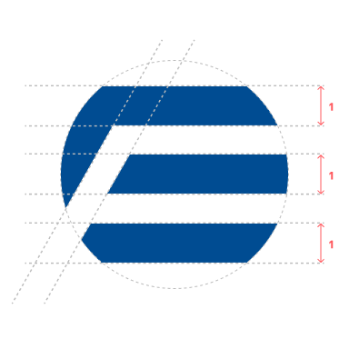
Positive Logo
The positive logo has to be used on light backgrounds. The background needs to bring enough contrast with the Foyer Blue color #004C92
{kind=link}
{kind=link}
{kind=link}
{kind=link}
Negative Logo
The negative logo if for dark or white backgrounds but comes with a blue gradient background with rounded corners. It uses a gradient with 2 colors from #005591 to #0088C9
{kind=link}
{kind=link}
Horizontal Logo
You can use this version of logo on compact context. Compact context is when you start having lack of rooms to put items on the screen, for example. It's when you need more space for practical concern: logo don't need to occupy all the available room.
{kind=link}
{kind=link}
{kind=link}
{kind=link}
Usage Rules
When it comes the time use our logos, respect the followings rules to avoid adding complexity into your interface or to avoid breaking our identity.
Positive Logo
On the positive logo, we used the F letter of Foyer to create spacing around the logo. Nothing from the outside is allowed to cross those visual lines.
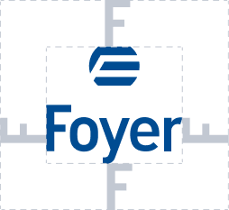
Negative Logo
On the negative logo, we used the F letter of Foyer next to the square to create spacing around the logo. Nothing from the outside is allowed to cross those visual lines.
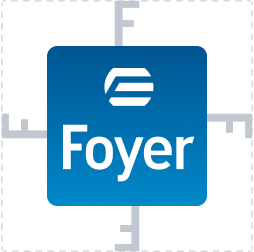
Horizontal Logo
On the horizontal logo, as this version is for compact use case, we used the F letter of Foyer, we rotate it of 90 deg. and put it around the logo. Nothing from the outside is allowed to cross those visual lines.
Size of the logos
The Foyer logo is worked for being readable even in small size. However, you must respect the minimum sizes for each variant. You can go bigger, never smaller.
The minimal width for the positive logo is 10 millimeters or 38 pixels wide.
For the negative logo is 12 millimeters or 45 pixels wide.
Some "Don'ts"
There is a lot of thing you can't do with or logo, because, again, it's a part of who we are. Here are some examples, but feel free to contact us if you need advice.
Contrast
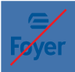 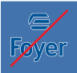 
On the three logos above, the use of the positive logo (the one without the square) is made over a to close background color. You need a contrasted enough background, or use the negative logo instead.
Spacing
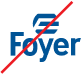 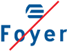 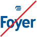
On the three logos above, distance between picto and text have been alterated (image 1), the spacing between letter have been alterated (image 2) or the picto have been scaled down (image 3). Those variations are not allowed.
Colors
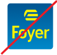 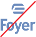 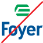
Colors can't be modified at all. The only variants possible are the original blue of Foyer #004C92, the gradient from #005591 to #0088C9 for the square, and the flat black and white versions in case of technical needs.
Shapes
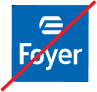 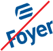
Do not try to remove or change the radius on the square of the negative logo (image 1) or rotate both negative and positive logos (image 2 and 3). The global shape and orientation of the logo have to be kept alike.
Visual Effects
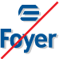 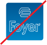
Do not user visual effects like outlining (image 2), shadowing (image 1) or other kind of visual effect like blur or liquid deformations unless the logo is put on an animation context.
"Dos" exceptions
Positive Logo is authorized in white on dark background: darkmode or dark pieces of interface for example.
Some exceptions can be authorized when the context have to override the previous rules: printer with only one colors, or building-related rules when comes the need of architectural harmony for example.
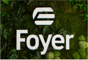

We forgot a lot
We always forgot to illustrate examples for what you can do or not with these logos. If you need any advice on how you can use those, please contact us, we will be please to help you.